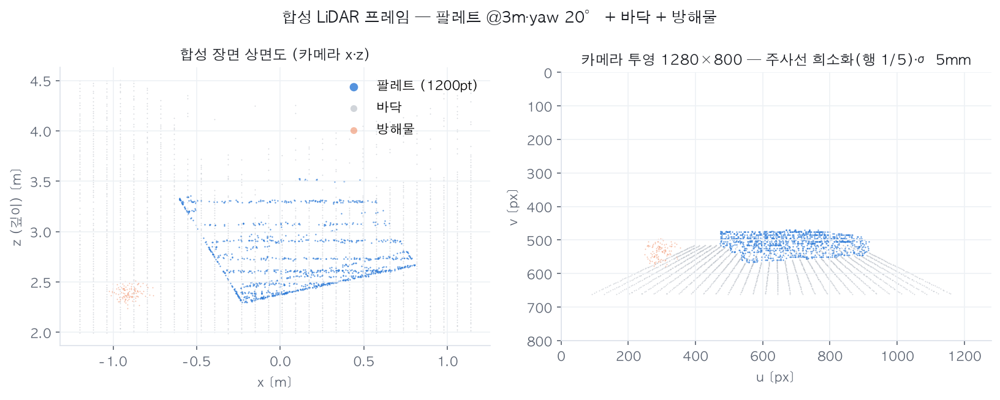
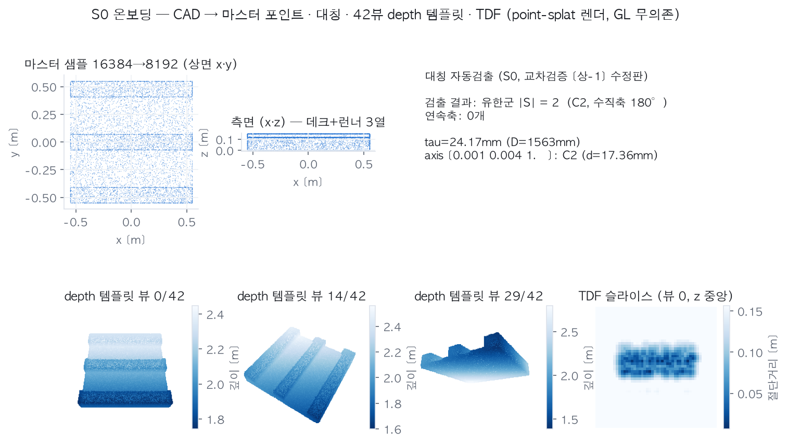
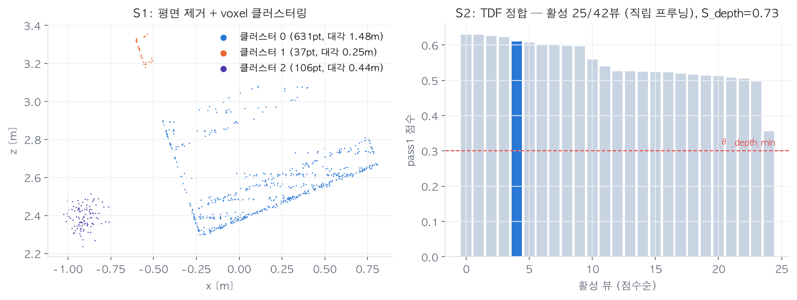
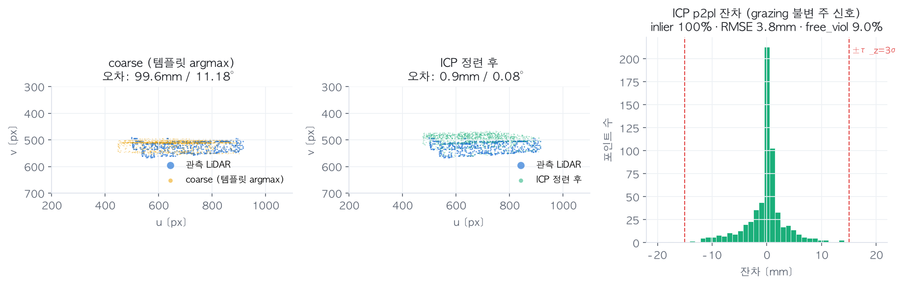
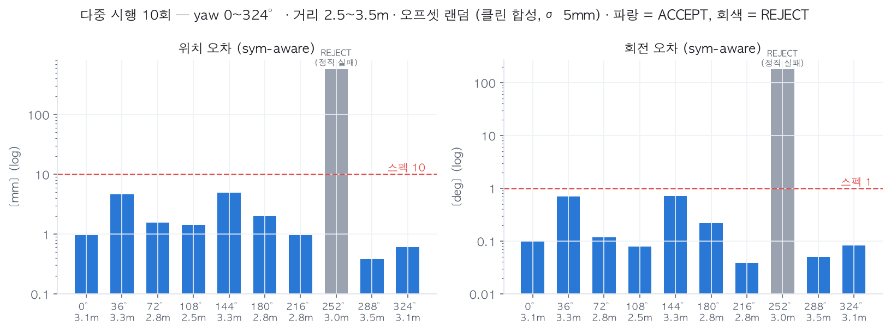

검증 질문: 학습 없이 형상 신호만으로(A1 원칙의 극한형) 확정 운용 조건 — 팔레트급 물체 · 상시 3m(2.5~3.5m) · 희소 LiDAR(물체 위 ~800pt) · σ 5mm — 에서 요구 스펙 위치 10mm · 회전 1°가 달성되는가, 그리고 검증기(S4)는 성공과 실패를 스스로 구분하는가.
| 검증하는 것 | 검증하지 않는 것 (한계 — §7) |
|---|---|
| 기하 파이프라인 전체 사슬의 알고리즘 정합성 · 스펙 달성 가능성 · verdict 신뢰성 · 대칭 처리 | 실세계 센서 특성(σ/바이어스 실측, 재질별 드롭), 캘리브레이션 오차, RGB 경로(EViT-SAM/DINOv2 — M1), 학습 모델(M2), 실기 레이턴시 |
| 요소 | 구성 |
|---|---|
| 대상 물체 | T11형 팔레트 근사 CAD: 데크 1100×1100×30mm + 런너 3열 (1100×140×120mm) — 포켓 2개의 다공성 구조 포함 |
| 카메라 | 1280×800, fx=fy=914 (HFOV ~70°), 확정 해상도 규약 |
| LiDAR 시뮬레이션 | 표면 6만 샘플 → 장면 전체 z-buffer 가시성(팔레트·바닥·방해물 상호 가림) → 주사선 희소화(행 1/5) → 물체 위 1200pt 캡 → 거리 노이즈 σ=5mm. 유효 관측 평균 ~763pt/물체 |
| 장면 | 바닥 평면(물체 지지) + 방해물 클러스터(크기 게이팅 검증용) |
| 포즈 시행 | 대표 1회(yaw 20°·3.0m) + 다중 10회: yaw 0~324°(36° 간격) × 거리 U[2.5, 3.5]m × 횡오프셋 U[−0.3, 0.3]m |
| 평가 지표 | sym-aware 오차 (S0 자동검출 대칭군 C2 기준 최소 오차 — ADD-S/MSSD 계열): 위치 = 모델 포인트 평균 변위, 회전 = 대칭 인식 geodesic |

온보딩 CLI(shape6d-onboard)와 동일 경로: Poisson disk 마스터 샘플 → 대칭 자동검출 → icosphere 42뷰 depth 템플릿(point-splat 렌더, GL 무의존) → 뷰별 TDF LUT. 팔레트의 C2 대칭(수직축 180°)이 자동 검출되어 이후 모든 평가·가설 중복 제거가 대칭 인식으로 동작한다.




| 지표 | coarse (템플릿 argmax) | 최종 (ICP 후, ACCEPT 9건) | 요구 스펙 |
|---|---|---|---|
| 위치 오차 | 평균 235mm | 평균 1.9mm · 최대 4.9mm | < 10mm ✓ |
| 회전 오차 | 평균 39.8° | 평균 0.23° · 최대 0.71° | < 1° ✓ |
| verdict | — | 정오 완전 일치 (오수락 0 · 오거부 0) | 오수락 <1% 목표 |
시사점: ① coarse는 거칠어도 된다(평균 40°) — 광역 τ 스케줄 ICP + 가설 5개 비교가 회복한다. ② 03 문서 §1.4e의 예측(팔레트 yaw 1σ ~0.12°)과 실측(0.04~0.71°)이 정합. ③ 레이턴시는 numpy CPU 레퍼런스 기준 프레임당 ~1.1s(가설 5개 전체 ICP 포함)로 목표 예산과 무관 — TRT/CUDA 이식(M1·M4) 대상이며 연산 구조는 배치 gather 중심으로 설계됨.
대표 1회 시행은 처음부터 통과였다(4.9mm/0.71°). 그 상태로 보고서를 썼다면 아래 6건은 전부 잠복했을 것 — yaw·거리를 흔든 10회 시행이 이들을 노출했고, 전부 수정 후의 결과가 §5다.
| # | 결함 (발견 시점 증상) | 수정 |
|---|---|---|
| 1 | 뷰 프루닝 미적용 — 아래에서 올려다본 템플릿 뷰가 매칭되어 뒤집힌(flip, ~170°) coarse 포즈 다발 (10회 중 8회 실패) | 직립 물체 뷰 마스크(upright_view_mask) 적용 — 03 §1.4e가 처방했던 옵션의 의무화 |
| 2 | 그리디 가설 수락 — 먼저 평가된 near-대칭 오포즈(90°/플립)가 ACCEPT되면 정답 가설이 평가 기회를 잃음 | 가설 전부(k≤5) ICP 평가 후 증거 비교 선택(inlier×coverage−free_viol) — 플립은 커버리지 0.42 vs 정답 0.99로 확실히 짐 |
| 3 | 합성 가림 누락 — 팔레트 뒤/밑 바닥 포인트(물리적으로 관측 불가)가 프레임에 잔존 → 정답 포즈의 free-space 위반 22%. frame-wide free-space 검증기가 데이터 버그를 정확히 검출한 사례 | 장면 전체 z-buffer 가시성 적용 |
| 4 | 가시성 판정 해상도 부족 — 표면 샘플(2.4만)이 풀해상 픽셀(8.5만)보다 성겨서 스플랫 구멍으로 뒤쪽 표면이 새어 들어옴 (위반 18% 잔존) | 가시성 판정을 stride-2 격자에서 수행 (샘플 밀도 > 셀 수 보장) |
| 5 | 다공성 물체의 free-space 원리 한계 — 팔레트 포켓 틈새로 정당하게 보이는 바닥이 "모델 뒤 관측 = 위반"으로 집계 (셀 단위 불투명 가정의 근본 한계) | free_viol을 하드 REJECT → 소프트 특징으로 강등(임계 0.15, M3-3 캘리브레이션 대상). 오포즈 판별의 주 무기는 결함 2의 가설 간 증거 비교로 이전 |
| 6 | 검증 포인트 밀도 규약 위반 — X_verify 1024pt는 스플랫 홀필이 포켓 개구를 오폐색 | 03 §2.4 규약(idx_verify 2048) 준수 의무화 |
| 항목 | 내용 |
|---|---|
| 클린 합성 | σ=5mm 가우시안만 반영. 실 LiDAR의 바이어스·엣지 mixed pixel·재질별 드롭아웃·고정 패턴 노이즈는 미반영 → D2-a 실측(RFQ ①)이 대체해야 함. 03 §1.4c 예산상 유닛별 거리 보정이 전제 |
| 캘리브레이션 오차 0 | 합성은 LiDAR-카메라 정합이 완벽. 실물에서는 ~3mm@3m 강체 바이어스가 하한으로 추가됨 (§2.3 예산) |
| S1 축약 | 클러스터 → Candidate 직결 (EViT-SAM 마스크 경로 미사용 — M1). 접촉·적재 병합 시나리오 미검증 |
| 신뢰도 미보정 | p_conf는 휴리스틱 초기 가중치 — verdict 일치는 하드가드+증거 비교의 결과이며, 확률로서의 p_conf는 M3-3 캘리브레이션 전까지 무의미 |
| 단일 물체 종 | 팔레트 1종. 소형 부품·판재류·유사 형상 혼입 미검증 (M0-3 프로토콜 대상) |
| 플립 리콜 | yaw 252° 케이스: 거부는 정직했지만 회복은 못 함 — coarse top-5가 전부 플립. in-plane 후보 다양화 또는 재적분 재시도가 운용 대응 (10%의 재시도 비용) |
uv run pytest tests/test_e2e_geo.py # E2E 회귀 (대표 시행, CI 게이트)
uv run python eval/synthetic_report/make_report.py # 본 보고서 그림·통계 재생성
# → docs/assets_04/fig*.png, stats.json
모든 난수 시드 고정 — 수치는 결정론적으로 재현된다. 시행별 원자료: docs/assets_04/stats.json.
결론: 확정 운용 조건의 클린 합성에서, 학습 없는 기하 파이프라인만으로 요구 스펙(10mm/1°)을 평균 5배 여유로 달성하며, 실패(10%)는 전량 자기 검출된다. 형상 우선 설계(A1)의 하한 성능이 이미 실용 범위라는 뜻이고, M2 학습(Shape6D-PEM)의 역할은 "성능 달성"이 아니라 coarse 강건화(플립·근대칭 리콜)와 저품질 조건 확장으로 재정의된다.
다음: ① M0-3 오염·재도장 프로토콜에 본 하네스 재사용(외형 증강은 RGB 경로 통합 후) ② M0-1 SAM-6D 재현(Ubuntu) ③ SOS Lab RFQ 회신 반영 → σ 실측값으로 본 시뮬레이션 갱신 ④ 03 문서 수정 대장에 §6의 결함 2·5·6 반영 완료.